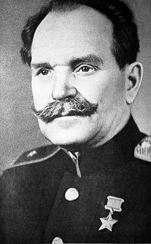

Подвиг народа
Борьба населения с немецкими захватчиками
Борьба населения БССР против немецких захватчиков началась с первых дней войны.
Она велась в различных формах — от невыполнения мероприятий оккупационных властей до вооружённого сопротивления.
Имели место как самостоятельные акты противодействия новому режиму со стороны отдельных лиц и групп, так и организованные в централизованном порядке военные и политические акции.
Подвиг партизанов
Наиболее ощутимыми для оккупантов были действия партизан и подпольщиков.
Свыше 374 тыс. партизан и более 70 тыс. участников подполья сражались против немецко-фашистских оккупантов на территории Беларуси.
Первый партизанский бой 28 июня 1941 года в окрестностях Пинска провёл отряд легендарного командира Василия Коржа.
В конце 1943 года белорусские партизаны контролировали 108 тыс. км², или 58,4 % оккупированной территории республики, в том числе 37,8 тыс. км² было очищено от оккупантов полностью.
 Василий Захарович КоржВсего на территории Беларуси существовало более 20 крупных партизанских зон.
В партизанских зонах восстанавливалась советская власть: действовали областные и районные комитеты партии и комсомола, райисполкомы, которые налаживали хозяйственную жизнь.
Партизанские зоны являлись организационными центрами вооружённой борьбы против немецко-фашистских захватчиков.
Там осуществлялась культурно-просветительная работа: размещались подпольные типографии, работали радиостанции, выпускались газеты, организовывался просмотр кинофильмов.
Подпольная борьба с захватчиками осуществлялась в тесной связи с партизанским движением и при поддержке населения.
Подпольные организации действовали практически во всех крупных населённых пунктах оккупированной территории Беларуси.
Самое крупное городское анти-фашистское подполье действовало в Минске.
Одной из самых памятных страниц истории минского сопротивления стала операция по ликвидации гауляйтера В. Кубе.
Непосредственным исполнителем операции стала домработница семьи гауляйтера Елена Мазаник, удостоенная впослед ствии звания Героя Советского Союза.
В ночь на 22 сентября 1943 года прямо в постели палача, уничтожившего сотни тысяч жизней, взорвалась мина, которую смогла подложить отважная женщина.
Блестящая операция минских подпольщиков воодушевила борющихся с оккупантами людей.
Спустя годы эта история легла в основу сюжета знаменитого советского фильма «Часы остановились в полночь» — первой киноленты о героях минского подполья.
Награждение и экономическая победа
За героизм и мужество, проявленные в борьбе с оккупантами, свыше 185 тыс. партизан и подпольщиков награждены орденами и медалями, из них 234 человека удостоены звания Героя Советского Союза, в том числе 91 уроженец Беларуси.
Благодаря самоотверженному труду рабочих, крестьян, интеллигенции в советском тылу была достигнута экономическая победа над нацистской Германией и её союзниками.
Победа была обеспечена не только воен но-экономическими факторами, но и преимуществом морального духа советских людей.